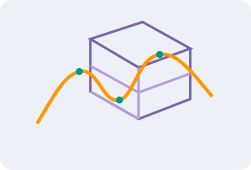

Tin tức nông nghiệp
Thông tin tiêu biểu từ bản lưu gốc
Nội dung được giữ theo snapshot năm 2022; đường dẫn ngoài đã được thay bằng trang nội bộ.
Huyện Phụng Hiệp: Khoảng 12 tỉ đồng hỗ trợ cho nông dân xây dựng và nhân rộng mô hình sản xuất
Đọc bản lưu →Hậu Giang cung cấp hơn 26.000 tấn trái cây phục vụ thị trường Tết
Đọc bản lưu →Hệ thống đa chức năng
Các chức năng cốt lõi
Tái cấu trúc từ các module được mô tả trong trang gốc, viết lại bằng HTML/CSS/JavaScript thuần.
Chức năng biểu đồ
Diễn biến và tình trạng ngành nông nghiệp được thể hiện theo chuỗi thời gian.
Quản lý cơ sở dữ liệu
Hỗ trợ lưu trữ và quản lý dữ liệu ngành nông nghiệp trên địa bàn Hậu Giang.
Tìm kiếm thông tin
Tra cứu thông tin nông nghiệp và các lớp dữ liệu liên quan ngay trong bộ static.
Ứng dụng trên thiết bị di động
Thiết kế responsive; mô phỏng quy trình cập nhật nhanh thông tin hiện trường.
Gửi thông báo trực tuyến
Bản offline minh họa luồng thông báo bằng dữ liệu cục bộ, không gửi ra Internet.
Hỗ trợ xuất báo cáo
Bảng quản trị có thể in hoặc lưu PDF trực tiếp từ trình duyệt.
Lập trình và tích hợp
Tổ hợp ứng dụng cho ngành nông nghiệp
Giữ các nhóm ứng dụng gốc, thay toàn bộ tài nguyên Archive bằng nội dung nội bộ.
Dữ liệu GIS nông nghiệp
Lưu trữ và quản lý dữ liệu nông nghiệp một cách hiệu quả.
Phân tích thông tin
Phân tích dữ liệu nông nghiệp, hỗ trợ ra quyết định.
Giám sát lúa
Cung cấp lớp dữ liệu diện tích lúa, cơ cấu mùa vụ và giai đoạn sinh trưởng.
Giám sát lũ
Minh họa lớp theo dõi ngập/lũ trên nền bản đồ offline.
Quan trắc tự động
Kết nối dữ liệu quan trắc phục vụ giám sát và cảnh báo.

Datacube
Hệ thống lưu trữ, xử lý và chia sẻ dữ liệu vệ tinh và nông nghiệp.
WebGIS offline
Bản đồ không phụ thuộc tile server
Map được viết bằng SVG + JavaScript thuần: kéo, zoom, bật/tắt lớp, tìm huyện và xem thông tin. Vì không gọi OpenStreetMap/Google/Wayback nên vẫn hoạt động khi mất mạng.
Không CDNKhông API keyKhông iframeKhông web-static.archive.org